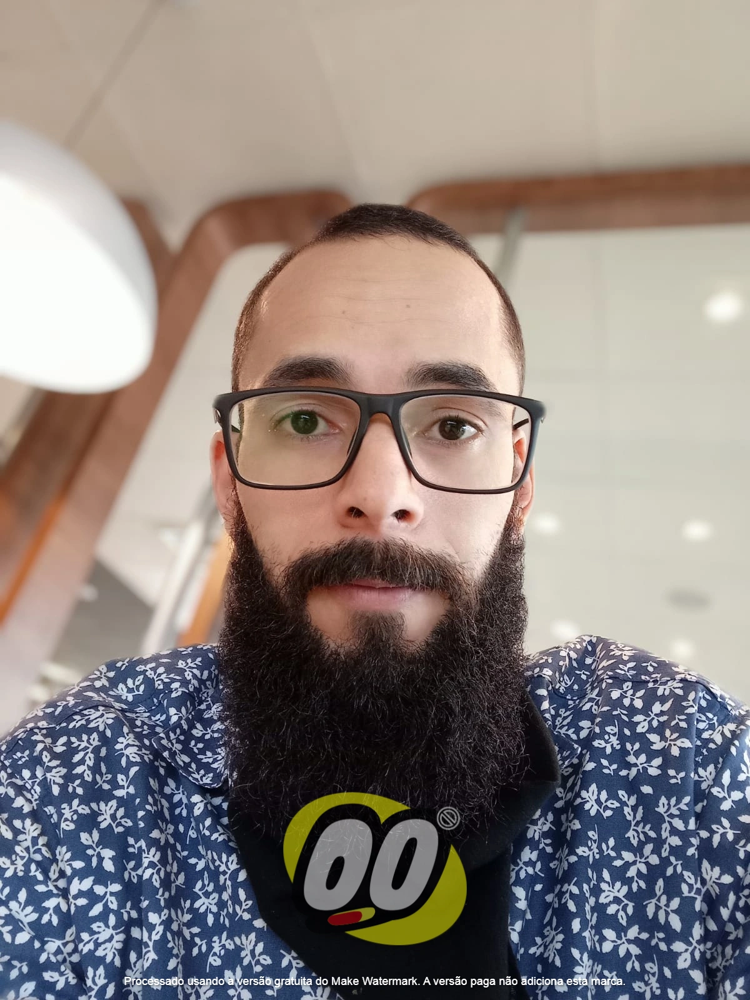
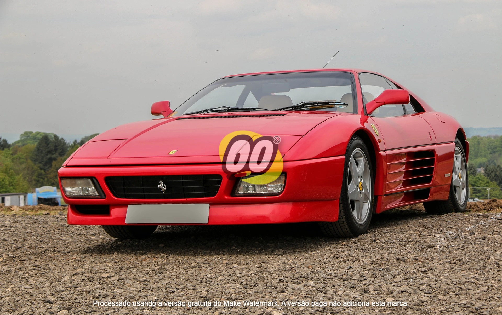

Bem vindo(a) ao blog Do "Leigoo"!
Sabe aquele tipo de pessoa que tenta equilibrar a vida real com as tarefas de casa, trabalho, família, estudos e ainda estar por dentro da tecnologia? 😎
Sim, esse sou eu na vida! Aqui no blog "Leigoo", vamos falar sobre tudo isso e muito mais. Grandes "trapalhadas" da vida, como a busca por um carro novo, mudança de profissão, universidade, coisas do dia a dia também entram na lista.
Então, vem comigo "Leigoo" nessa jornada de tentar manter a sanidade no meio de tantas responsabilidades...
Leia Mais

O sonho do carro Novo!
Lá vai o "Leigoo" atrás do sonho do carro novo, ficou sabendo que no leilão os carros são mais baratos, então, trabalhou em projetos extras, por vários dias e juntou uma grana, tipo, uns 20 mil reais, fez o cadastro no site do leilão, buscou saber os dias e horários dos próximos leilões e assim o "Leigoo" decidiu comprar seu carro novo...
Mas, a vida não é tão simples assim, certo, Sr "Leigoo"?...
Leia Mais
Bora mudar de profissão?
Você já se pegou pensando em mudar completamente sua carreira? Pois é, nosso amigo "Leigoo" também passou por isso, ele trabalhava como designer gráfico, mas de repente decidiu que queria ser um desenvolvedor front-end.
Ah! "Leigoo" de novo se envolvendo em uma trabalhada... Ele correu e se matriculou no curso de ADS na UNIP, pensou que seria fácil, como foi o seu ingresso na área gráfica em 2009, pois, com 6 meses de curso no SENAC já estava empregado...
Mas o "Leigoo" parece ter dedicação, resiliência e persistência para seguir em frente... Quer saber como essa história termina? Continue lendo!
Leia Mais

O que fazer primeiro, universidade, curso técnico, ou...?
Muitas são as possibilidades de estudo para quem deseja se aventurar no universo da Tecnologia. Universidades, escolas técnicas e cursos específicos de programação são alguns dos caminhos possíveis.
Mas, como sempre, nosso amigo "Leigoo" optou pelo caminho diferente e decidiu fazer uma graduação em Análise e Desenvolvimento de Sistemas.
Neste artigo, vamos acompanhar a trajetória do "Leigoo" nessa jornada de estudo e descoberta. Prepare-se para acompanhar os altos e baixos dessa aventura!
Leia Mais